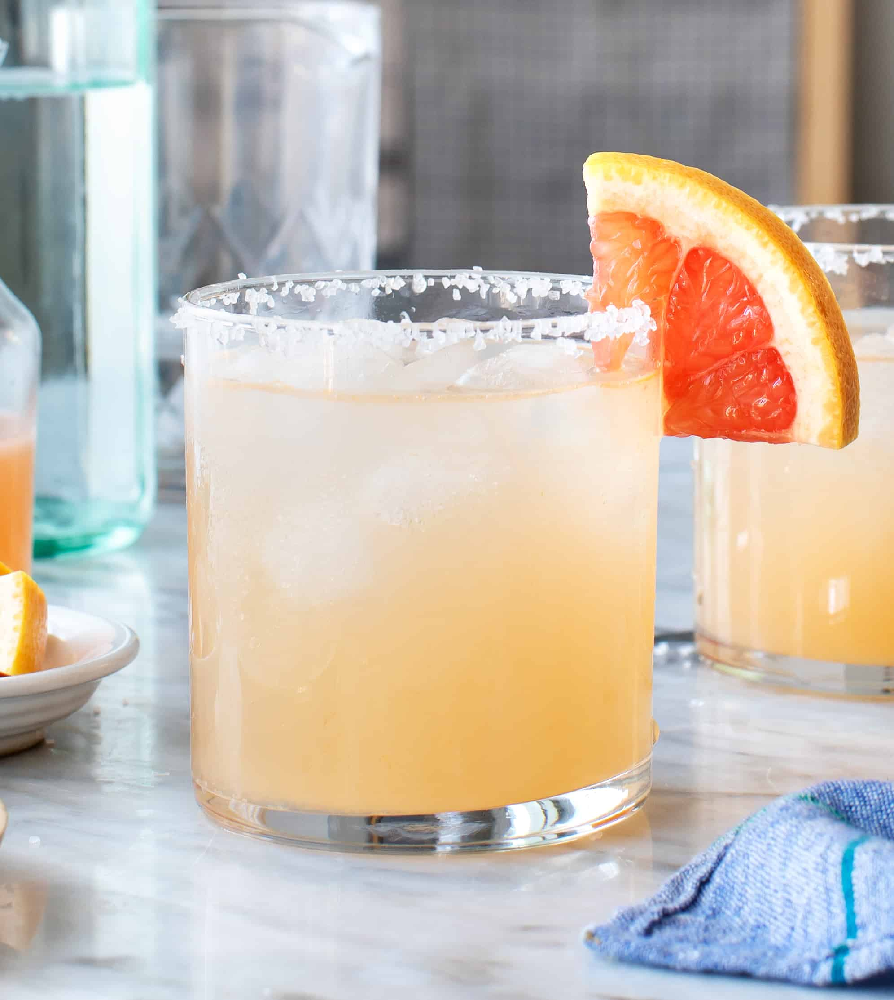

Paloma Recipe

Description
It turns out the Paloma, not the Margarita, is Mexico's most beloved cocktail.
Ingredients
- 4 oz Grapefruit Spindrift
- 2 oz Rum
- 1 oz Simple Syrup
- 1/2 Lime
Steps
- Squeeze lime into glass over ice.
- In a cocktail mixer, shake together remaining ingredients.
- Pour into glass and enjoy.